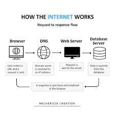

What is Web Development?
Web Development is the process of creating and maintaining websites. It involves everything from designing a simple static page to building complex web applications. The web is built using three fundamental technologies:
- HTML — Defines the structure and content.
- CSS — Adds style and layout.
- JS — Makes websites interactive.
Front-End vs Back-End
Web development is divided into two main parts:
Front-End (Client-Side)
This is what users see directly in their browser — the layout, colors, fonts, buttons, and images.
It mainly uses HTML, CSS, and JavaScript.
Back-End (Server-Side)
This is the behind-the-scenes part — how data is stored, processed, and delivered. It uses languages like Python, PHP, Node.js, and databases such as MySQL or MongoDB.
How the Web Works
When you type a URL (like https://www.example.com) in your browser, the browser sends a request
to a web server.
The server processes that request and sends back the requested page — usually written in HTML.

HTML’s Role in Web Development
“HTML is the backbone of all web pages. Without it, the web would not exist.”
HTML uses elements (or tags) to structure content, such as headings, paragraphs, images, links, and lists. For example:
<h1>This is a Heading</h1>
<p>This is a paragraph.</p>
Result →
This is a Heading
This is a paragraph.
Web Development Progress Example
Learning Progress in HTML:
80% CompleteImportant Semantic Tags Used
<header>,<footer><main>,<article>,<section>,<aside><nav>,<details>,<summary><figure>,<figcaption>,<blockquote>